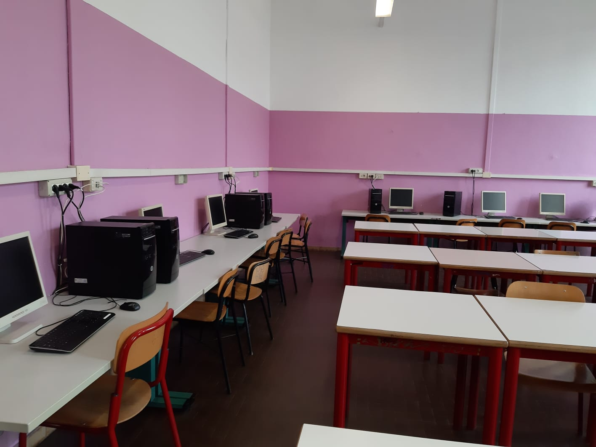
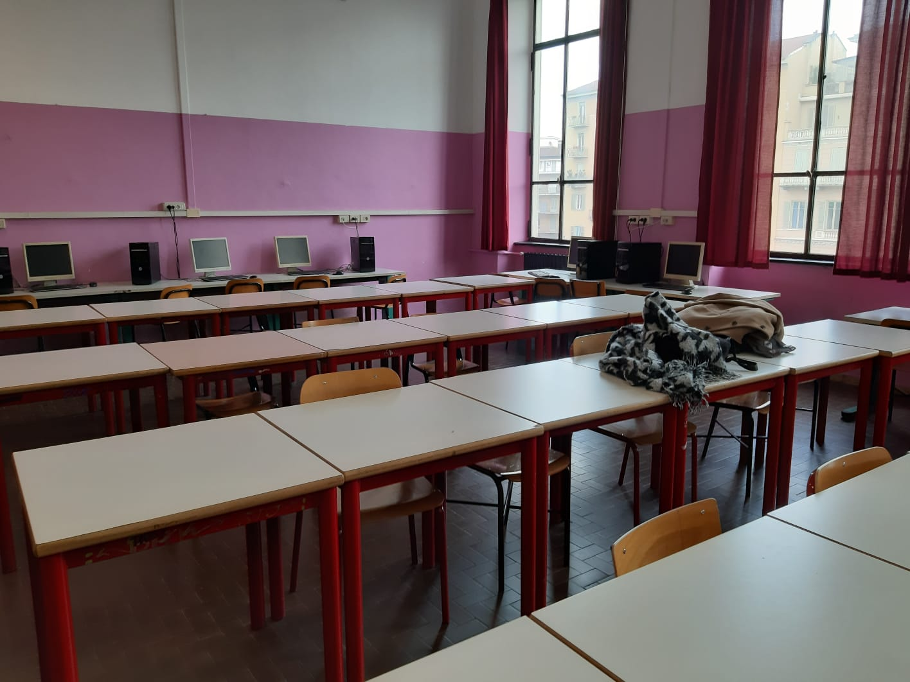

Matematica triennio |
||
|---|---|---|
| Immagini dell'aula | ||
|  |  | |
| Dati tecnici dell'aula | ||
|
In quest'aula ci sono:
|
||
| Informazioni sull'aula | ||
|
Quest'aula per le lezioni era dedicata alla matematica. Fornita di computer, gli studenti possono utilizzarli per usare strumenti online relativi alla matematica. |
||